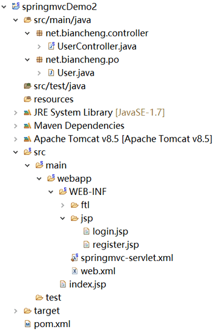
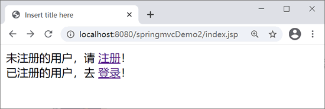
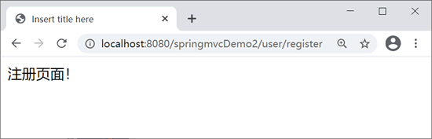
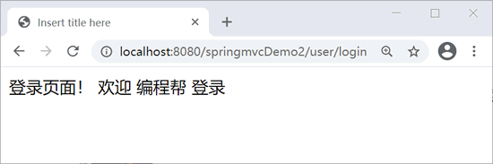
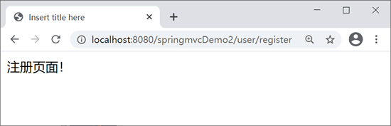
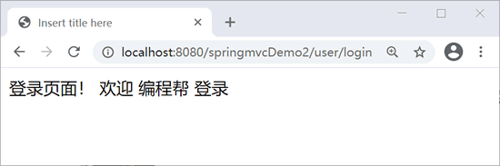

首页 > 编程笔记
Spring MVC @Controller和@RequestMapping注解
Spring 2.5 版本新增了 Spring MVC 注解功能，用于替换传统的基于 XML 的 Spring MVC 配置。
在《第一个Spring MVC应用》一节中创建了两个传统风格的控制器，它们是实现 Controller 接口的类。传统风格的控制器不仅需要在配置文件中部署映射，而且只能编写一个处理方法，不够灵活。
使用基于注解的控制器具有以下 2 个优点：
下面介绍在 Spring MVC 中最重要的两个注解类型：@Controller 和 @RequestMapping。
本节示例基于《第一个Spring MVC应用》一节中的代码实现。
例如，在 springmvcDemo 应用的配置文件 springmvc-servlet.xml 中添加以下代码：
在基于注解的控制器类中可以为每个请求编写对应的处理方法。使用 @RequestMapping 注解将请求与处理方法一 一对应即可。
@RequestMapping 注解可用于类或方法上。用于类上，表示类中的所有响应请求的方法都以该地址作为父路径。
@RequestMapping 注解常用属性如下。
path 属性支持通配符匹配，如 @RequestMapping(path="toUser/*") 表示 http://localhost:8080/toUser/1 或 http://localhost:8080/toUser/hahaha 都能够正常访问。
@RequestMapping(value = "toUser",method = RequestMethod.GET) 表示该方法只支持 GET 请求。也可指定多个 HTTP 请求，如 @RequestMapping(value = "toUser",method = {RequestMethod.GET,RequestMethod.POST})，说明该方法同时支持 GET 和 POST 请求。
@RequestMapping(value = "toUser",headers = "Referer=http://www.xxx.com") 表示请求的 header 中必须包含了指定的“Referer”请求头，以及值为“http://www.xxx.com”时，才能执行该请求。
@RequestMapping(value = "toUser",consumes = "application/json")。
除此之外，produces 属性还可以指定返回值的编码。如 @RequestMapping(value = "toUser",produces = "application/json,charset=utf-8")，表示返回 utf-8 编码。
使用 @RequestMapping 来完成映射，具体包括 4 个方面的信息项：请求 URL、请求参数、请求方法和请求头。
用户可以使用如下 URL 访问 login 方法（请求处理方法），在访问 login 方法之前需要事先在 /WEB-INF/jsp/ 目录下创建 login.jsp。
其中特别重要的类型是 org.springframework.ui.Model 类型，该类型是一个包含 Map 的 Spring MVC类型。在每次调用请求处理方法时 Spring MVC 都将创建 org.springframework.ui.Model 对象。Model 参数类型的示例代码如下：
最常见的返回类型就是代表逻辑视图名称的 String 类型，例如前面几节中的请求处理方法。
springmvcDemo2 应用目录结构如下。
web.xml 代码如下。
在上图所示的页面中，当用户单击“注册”超链接时，控制器会将该请求转发给 UserController 的 getLogin 方法处理，处理后跳转到 /WEB-INF/jsp 下的 register.jsp 视图。同理，当单击“登录”超链接时，控制器处理后转到 /WEB-INF/jsp下的 login.jsp 视图。
在《第一个Spring MVC应用》一节中创建了两个传统风格的控制器，它们是实现 Controller 接口的类。传统风格的控制器不仅需要在配置文件中部署映射，而且只能编写一个处理方法，不够灵活。
使用基于注解的控制器具有以下 2 个优点：
- 在基于注解的控制器类中可以编写多个处理方法，进而可以处理多个请求（动作），这就允许将相关的操作编写在同一个控制器类中，从而减少控制器类的数量，方便以后维护。
- 基于注解的控制器不需要在配置文件中部署映射，仅需要使用 @RequestMapping 注解一个方法进行请求处理即可。
下面介绍在 Spring MVC 中最重要的两个注解类型：@Controller 和 @RequestMapping。
本节示例基于《第一个Spring MVC应用》一节中的代码实现。
Controller注解
@Controller 注解用于声明某类的实例是一个控制器。例如，在 net.biancheng.controller 包中创建控制器类 IndexController，示例代码如下。
package net.biancheng.controller;
import org.springframework.stereotype.Controller;
@Controller
public class IndexController {
// 处理请求的方法
}
Spring MVC 使用扫描机制找到应用中所有基于注解的控制器类，所以，为了让控制器类被 Spring MVC 框架扫描到，需要在配置文件中声明 spring-context，并使用 <context:component-scan/> 元素指定控制器类的基本包（请确保所有控制器类都在基本包及其子包下）。例如，在 springmvcDemo 应用的配置文件 springmvc-servlet.xml 中添加以下代码：
<!-- 使用扫描机制扫描控制器类，控制器类都在net.biancheng.controller包及其子包下 --> <context:component-scan base-package="net.biancheng.controller" />
RequestMapping注解
一个控制器内有多个处理请求的方法，如 UserController 里通常有增加用户、修改用户信息、删除指定用户、根据条件获取用户列表等。每个方法负责不同的请求操作，而 @RequestMapping 就负责将请求映射到对应的控制器方法上。在基于注解的控制器类中可以为每个请求编写对应的处理方法。使用 @RequestMapping 注解将请求与处理方法一 一对应即可。
@RequestMapping 注解可用于类或方法上。用于类上，表示类中的所有响应请求的方法都以该地址作为父路径。
@RequestMapping 注解常用属性如下。
1. value 属性
value 属性是 @RequestMapping 注解的默认属性，因此如果只有 value 属性时，可以省略该属性名，如果有其它属性，则必须写上 value 属性名称。如下。
@RequestMapping(value="toUser")
@RequestMapping("toUser")
value 属性支持通配符匹配，如 @RequestMapping(value="toUser/*") 表示 http://localhost:8080/toUser/1 或 http://localhost:8080/toUser/hahaha 都能够正常访问。
2. path属性
path 属性和 value 属性都用来作为映射使用。即 @RequestMapping(value="toUser") 和 @RequestMapping(path="toUser") 都能访问 toUser() 方法。path 属性支持通配符匹配，如 @RequestMapping(path="toUser/*") 表示 http://localhost:8080/toUser/1 或 http://localhost:8080/toUser/hahaha 都能够正常访问。
3. name属性
name属性相当于方法的注释，使方法更易理解。如 @RequestMapping(value = "toUser",name = "获取用户信息")。4. method属性
method 属性用于表示该方法支持哪些 HTTP 请求。如果省略 method 属性，则说明该方法支持全部的 HTTP 请求。@RequestMapping(value = "toUser",method = RequestMethod.GET) 表示该方法只支持 GET 请求。也可指定多个 HTTP 请求，如 @RequestMapping(value = "toUser",method = {RequestMethod.GET,RequestMethod.POST})，说明该方法同时支持 GET 和 POST 请求。
5. params属性
params 属性用于指定请求中规定的参数，代码如下。
@RequestMapping(value = "toUser",params = "type")
public String toUser() {
return "showUser";
}
以上代码表示请求中必须包含 type 参数时才能执行该请求。即 http://localhost:8080/toUser?type=xxx 能够正常访问 toUser() 方法，而 http://localhost:8080/toUser 则不能正常访问 toUser() 方法。
@RequestMapping(value = "toUser",params = "type=1")
public String toUser() {
return "showUser";
}
以上代码表示请求中必须包含 type 参数，且 type 参数为 1 时才能够执行该请求。即 http://localhost:8080/toUser?type=1 能够正常访问 toUser() 方法，而 http://localhost:8080/toUser?type=2 则不能正常访问 toUser() 方法。6. header属性
header 属性表示请求中必须包含某些指定的 header 值。@RequestMapping(value = "toUser",headers = "Referer=http://www.xxx.com") 表示请求的 header 中必须包含了指定的“Referer”请求头，以及值为“http://www.xxx.com”时，才能执行该请求。
7. consumers属性
consumers 属性用于指定处理请求的提交内容类型（Content-Type），例如：application/json、text/html。如@RequestMapping(value = "toUser",consumes = "application/json")。
8. produces属性
produces 属性用于指定返回的内容类型，返回的内容类型必须是 request 请求头（Accept）中所包含的类型。如 @RequestMapping(value = "toUser",produces = "application/json")。除此之外，produces 属性还可以指定返回值的编码。如 @RequestMapping(value = "toUser",produces = "application/json,charset=utf-8")，表示返回 utf-8 编码。
使用 @RequestMapping 来完成映射，具体包括 4 个方面的信息项：请求 URL、请求参数、请求方法和请求头。
通过请求URL进行映射
1）方法级别注解
方法级别注解的示例代码如下。
package net.biancheng.controller;
import org.springframework.stereotype.Controller;
import org.springframework.web.bind.annotation.RequestMapping;
@Controller
public class IndexController {
@RequestMapping(value = "/index/login")
public String login() {
return "login";
}
@RequestMapping(value = "/index/register")
public String register() {
return "register";
}
}
上述示例中有两个 RequestMapping 注解语句，它们都作用在处理方法上。在整个 Web 项目中，@RequestMapping 映射的请求信息必须保证全局唯一。用户可以使用如下 URL 访问 login 方法（请求处理方法），在访问 login 方法之前需要事先在 /WEB-INF/jsp/ 目录下创建 login.jsp。
http://localhost:8080/springmvcDemo/index/login
2）类级别注解
类级别注解的示例代码如下：
package net.biancheng.controller;
import org.springframework.stereotype.Controller;
import org.springframework.web.bind.annotation.RequestMapping;
@Controller
@RequestMapping("/index")
public class IndexController {
@RequestMapping("/login")
public String login() {
return "login";
}
@RequestMapping("/register")
public String register() {
return "register";
}
}
在类级别注解的情况下，控制器类中的所有方法都将映射为类级别的请求。用户可以使用如下 URL 访问 login 方法。
http://localhost:8080/springmvcDemo/index/login
为了方便维护程序，建议开发者采用类级别注解，将相关处理放在同一个控制器类中。例如，对用户的增、删、改、查等处理方法都可以放在 UserController 控制类中。通过请求参数、请求方法进行映射
@RequestMapping 除了可以使用请求 URL 映射请求之外，还可以使用请求参数、请求方法来映射请求，通过多个条件可以让请求映射更加精确。
package net.biancheng.controller;
import org.springframework.stereotype.Controller;
import org.springframework.web.bind.annotation.RequestMapping;
@Controller
public class IndexController {
@RequestMapping(value = "/index/success" method=RequestMethod.GET, Params="username")
public String success(@RequestParam String username) {
return "index";
}
上述代码中，@RequestMapping 的 value 表示请求的 URL；method 表示请求方法，此处设置为 GET 请求，若是 POST 请求，则无法进入 success 这个处理方法中。params 表示请求参数，此处参数名为 username。编写请求处理方法
在控制类中每个请求处理方法可以有多个不同类型的参数，以及一个多种类型的返回结果。1）请求处理方法中常出现的参数类型
如果需要在请求处理方法中使用 Servlet API 类型，那么可以将这些类型作为请求处理方法的参数类型。Servlet API 参数类型的示例代码如下：
package net.biancheng.controller;
import javax.servlet.http.HttpSession;
import org.springframework.stereotype.Controller;
import org.springframework.web.bind.annotation.RequestMapping;
@Controller
@RequestMapping("/index")
public class IndexController {
@RequestMapping("/login")
public String login(HttpSession session,HttpServletRequest request) {
session.setAttribute("skey", "session范围的值");
session.setAttribute("rkey", "request范围的值");
return "login";
}
}
除了 Servlet API 参数类型以外，还有输入输出流、表单实体类、注解类型、与 Spring 框架相关的类型等，这些类型在后续章节中使用时再详细介绍。其中特别重要的类型是 org.springframework.ui.Model 类型，该类型是一个包含 Map 的 Spring MVC类型。在每次调用请求处理方法时 Spring MVC 都将创建 org.springframework.ui.Model 对象。Model 参数类型的示例代码如下：
package net.biancheng.controller;
import javax.servlet.http.HttpServletRequest;
import javax.servlet.http.HttpSession;
import org.springframework.stereotype.Controller;
import org.springframework.ui.Model;
import org.springframework.web.bind.annotation.RequestMapping;
@Controller
@RequestMapping("/index")
public class IndexController {
@RequestMapping("/register")
public String register(Model model) {
/*在视图中可以使用EL表达式${success}取出model中的值*/
model.addAttribute("success", "注册成功");
return "register";
}
}
2）请求处理方法常见的返回类型
请求处理方法可以返回如下类型的对象：- ModelAndView
- Model
- 包含模型属性的 Map
- View
- 代表逻辑视图名的 String
- void
- 其它任意Java类型
最常见的返回类型就是代表逻辑视图名称的 String 类型，例如前面几节中的请求处理方法。
示例
创建 Web 应用 springmvcDemo2，导入相应的 JAR 包（可参考《第一个Spring MVC程序》一节导入的 JAR 包）。springmvcDemo2 应用目录结构如下。

springmvcDemo2目录结构
springmvcDemo2目录结构
web.xml 代码如下。
<?xml version="1.0" encoding="UTF-8"?>
<web-app xmlns:xsi="http://www.w3.org/2001/XMLSchema-instance"
xmlns="http://java.sun.com/xml/ns/javaee"
xmlns:web="http://java.sun.com/xml/ns/javaee/web-app_2_5.xsd"
xsi:schemaLocation="http://java.sun.com/xml/ns/javaee http://java.sun.com/xml/ns/javaee/web-app_3_0.xsd"
version="3.0">
<display-name>springMVC</display-name>
<!-- 部署 DispatcherServlet -->
<servlet>
<servlet-name>springmvc</servlet-name>
<servlet-class>org.springframework.web.servlet.DispatcherServlet</servlet-class>
<init-param>
<param-name>contextConfigLocation</param-name>
<param-value>/WEB-INF/springmvc-servlet.xml</param-value>
</init-param>
<!-- 表示容器再启动时立即加载servlet -->
<load-on-startup>1</load-on-startup>
</servlet>
<servlet-mapping>
<servlet-name>springmvc</servlet-name>
<!-- 处理所有URL -->
<url-pattern>/</url-pattern>
</servlet-mapping>
</web-app>
springmvc-servlet.xml 配置文件代码如下。
<?xml version="1.0" encoding="UTF-8"?>
<beans xmlns="http://www.springframework.org/schema/beans"
xmlns:xsi="http://www.w3.org/2001/XMLSchema-instance"
xmlns:mvc="http://www.springframework.org/schema/mvc"
xmlns:p="http://www.springframework.org/schema/p"
xmlns:context="http://www.springframework.org/schema/context"
xsi:schemaLocation="
http://www.springframework.org/schema/beans
http://www.springframework.org/schema/beans/spring-beans.xsd
http://www.springframework.org/schema/context
http://www.springframework.org/schema/context/spring-context.xsd
http://www.springframework.org/schema/mvc
http://www.springframework.org/schema/mvc/spring-mvc.xsd">
<context:component-scan
base-package="net.biancheng.controller" />
<bean id="viewResolver"
class="org.springframework.web.servlet.view.InternalResourceViewResolver">
<!--前缀 -->
<property name="prefix" value="/WEB-INF/jsp/" />
<!--后缀 -->
<property name="suffix" value=".jsp" />
</bean>
</beans>
创建 User 实体类，代码如下。如前面所说，使用 Controller 注解的一个优点在于一个控制类可以包含多个请求处理方法。创建 UserController，代码如下。
package net.biancheng.controller;
import org.springframework.stereotype.Controller;
import org.springframework.ui.Model;
import org.springframework.web.bind.annotation.RequestMapping;
import net.biancheng.po.User;
@Controller
@RequestMapping("/user")
public class UserController {
@RequestMapping("/login")
public String getLogin(Model model) {
User us = new User();
us.setName("编程帮");
model.addAttribute("user", us);
return "login";
}
@RequestMapping("/register")
public String getRegister() {
return "register";
}
}
index.jsp 文件页面代码如下。
<%@ page language="java" contentType="text/html; charset=UTF-8"
pageEncoding="UTF-8"%>
<!DOCTYPE html PUBLIC "-//W3C//DTD HTML 4.01 Transitional//EN" "http://www.w3.org/TR/html4/loose.dtd">
<html>
<head>
<meta http-equiv="Content-Type" content="text/html; charset=UTF-8">
<title>Insert title here</title>
</head>
<body>
未注册的用户，请
<a href="${pageContext.request.contextPath }/user/register"> 注册</a>！
<br /> 已注册的用户，去
<a href="${pageContext.request.contextPath }/user/login"> 登录</a>！
</body>
</html>
login.jsp 代码如下。
<%@ page language="java" contentType="text/html; charset=UTF-8"
pageEncoding="UTF-8"%>
<!DOCTYPE html PUBLIC "-//W3C//DTD HTML 4.01 Transitional//EN" "http://www.w3.org/TR/html4/loose.dtd">
<html>
<head>
<meta http-equiv="Content-Type" content="text/html; charset=UTF-8">
<title>Insert title here</title>
</head>
<body>
登录页面！ 欢迎 ${user.name} 登录
</body>
</html>
register.jsp 代码如下。
<%@ page language="java" contentType="text/html; charset=UTF-8"
pageEncoding="UTF-8" %>
<!DOCTYPE html PUBLIC "-//W3C//DTD HTML 4.01 Transitional//EN" "http://www.w3.org/TR/html4/loose.dtd">
<html>
<head>
<meta http-equiv="Content-Type" content="text/html; charset=UTF-8">
<title>Insert title here</title>
</head>
<body>
注册页面！
</body>
</html>
运行结果如下。

index.jsp页面

register.jsp页面

login.jsp页面
index.jsp页面

register.jsp页面

login.jsp页面
在上图所示的页面中，当用户单击“注册”超链接时，控制器会将该请求转发给 UserController 的 getLogin 方法处理，处理后跳转到 /WEB-INF/jsp 下的 register.jsp 视图。同理，当单击“登录”超链接时，控制器处理后转到 /WEB-INF/jsp下的 login.jsp 视图。
关注公众号「站长严长生」，在手机上阅读所有教程，随时随地都能学习。内含一款搜索神器，免费下载全网书籍和视频。

微信扫码关注公众号